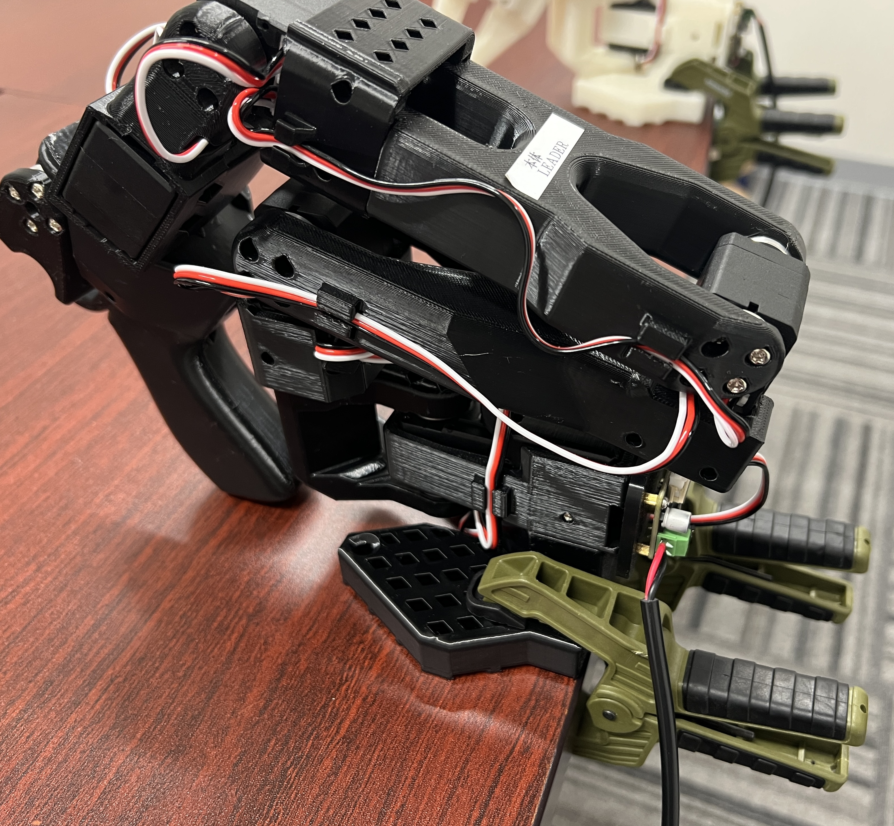
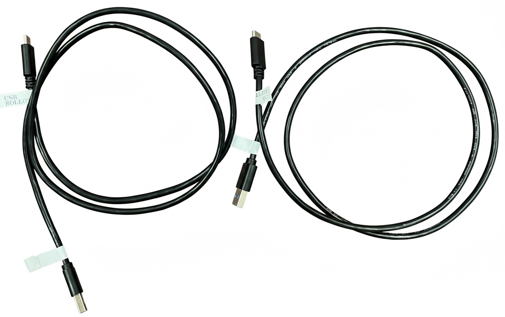
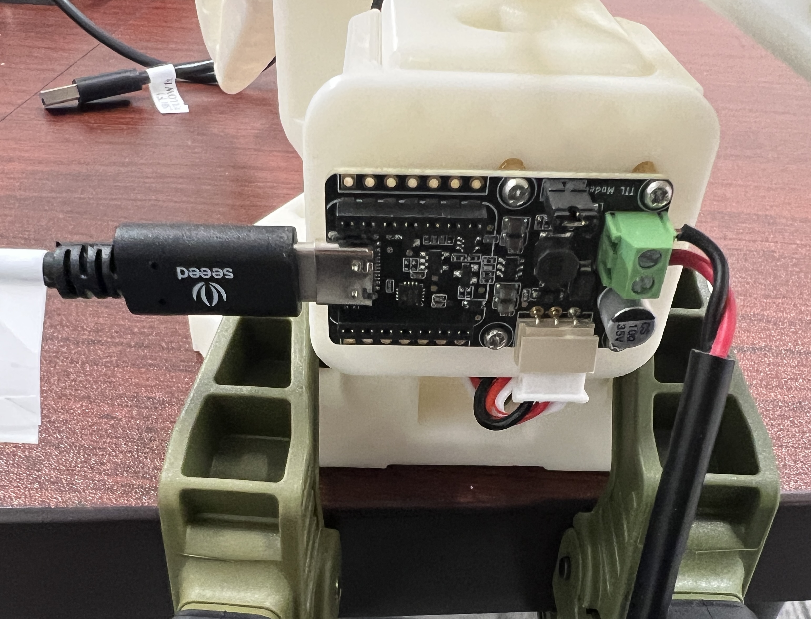
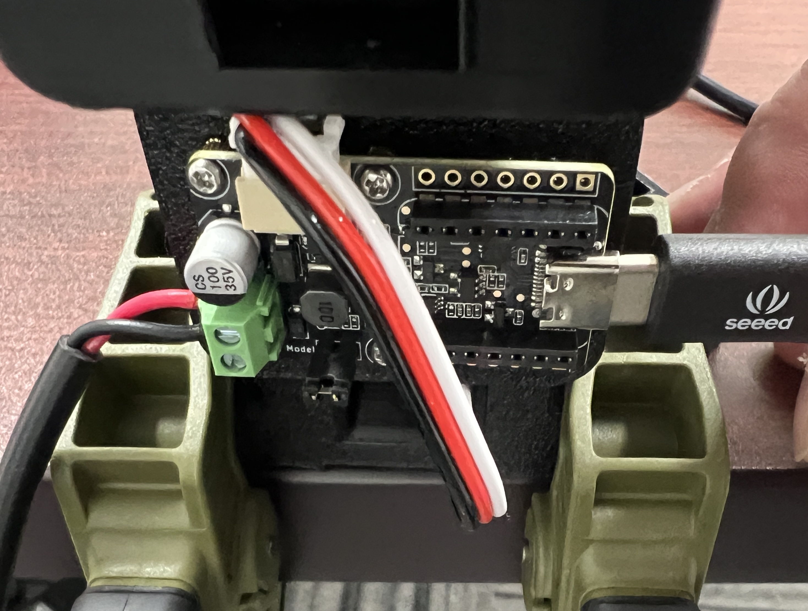
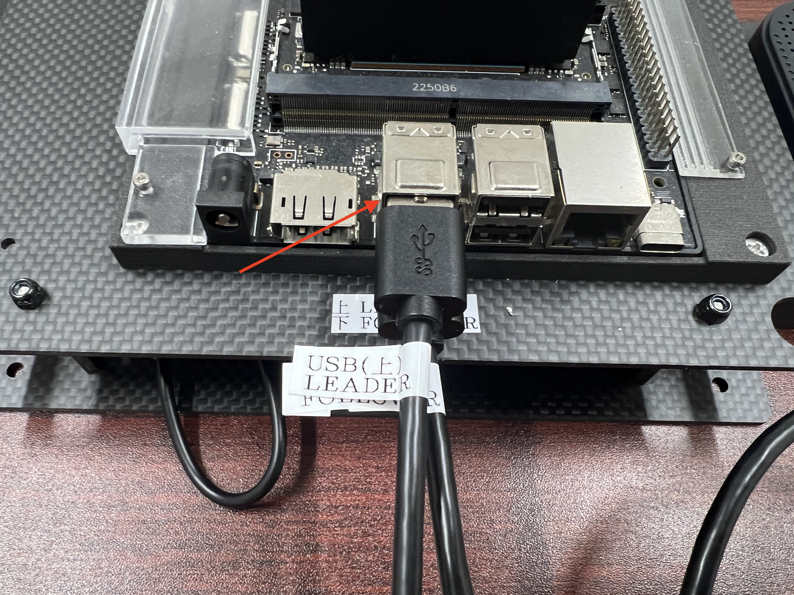
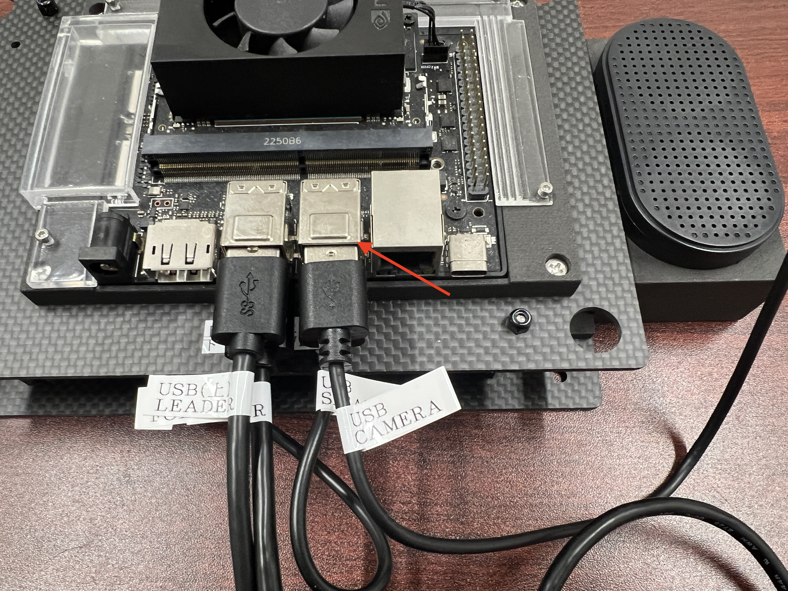
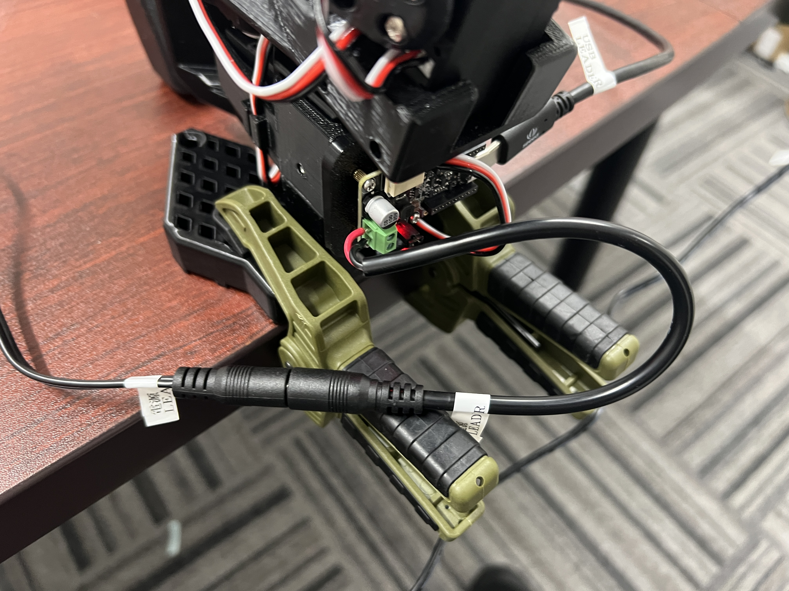
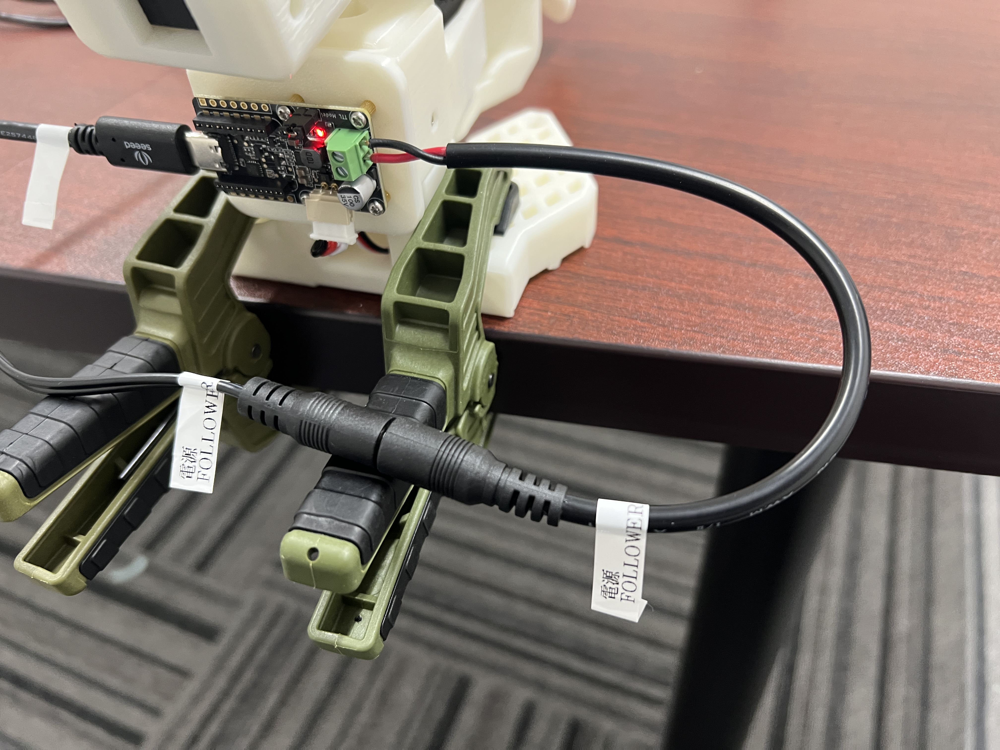
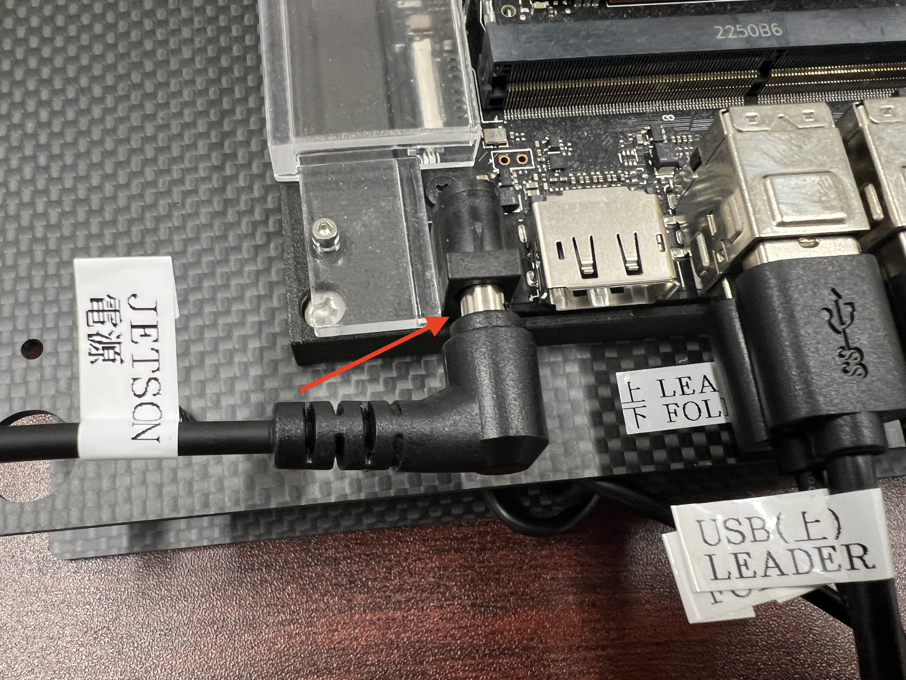

FaBo LeRobot Kit(SO-101連携) 組み立て
SO-101 Follower
SO-101 Followerを固定


同様にSO-101 Leaderを固定

USBの配線
USB Type-Cケーブルを使って、JetsonとSO-101 Follower, Leaderを接続します

SO-101 FollowerとJetsonをUSB Type-Cケーブルで接続します。

Warning
FollowerのUSBケーブルは必ず下の位置に差してください

SO-101 LeaderとJetsonをUSB Type-Cケーブルで接続します。


Warning
LeaderのUSBケーブルは必ず上の位置に差してください
USB Speakerの配線

USB Camera
USBカメラを設置してください。

Jetsonに接続します。

ロボットアーム電源



Jetson電源

